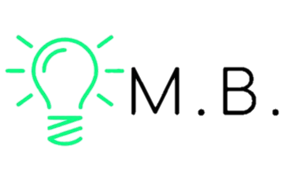

Criação da Máquina
Conversão da Chave
Acesso Putty
WinSCP
TUTORIAL AWS
Passo Anterior:
Criação da Máquina Virtual
Convertendo a chave no putty:
Abre o programa PuTTYgen.
Clique em “Load”.
Selecione “allfiles”.
Selecione o arquivo da chave que foi feita o download (.pem). Clique em “Abrir”.
Clique em “Save private key” para salvar sua chave. Clique em “Sim”.
Digite o nome que deseja para sua chave. Clique em “Salvar”.
Próximos passos:
Acessando a máquina através do Putty